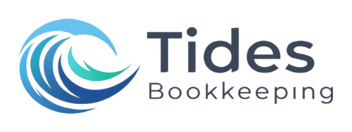

Bookkeeping Proposal
Seven months to catch up, and a number on every house
Where you’re starting
The business works. The books stopped in April.
Two years of flipping houses in Knoxville, a couple of them in the air at once. QuickBooks is already there, with one bank account and one credit card running through it, and a set of Google Sheets alongside it.
Bookkeeping has been open since April. Seven months of a single account and a single card is a short catch-up, and the smaller it stays the cheaper it stays — which is why now is the right time to close it out rather than at tax time.
The part worth more than the catch-up is what comes after. Flips don’t tell you anything from one profit and loss for the year. They tell you something house by house: what you paid, what the rehab actually ran against what you thought it would, what the holding cost while it sat, and what was left at closing. That’s what I’d build you.
How I’d set it up
Four pieces
Scope of work
What I’ll do
- Catch-up, April through October 2026 (one-time). The bank account and the credit card categorized and reconciled for all seven months, every house set up as a project and its costs moved onto it, anything bought or sold recorded from its closing statement, and a short list of the few things only you can answer.
- Ongoing every month, from November 1. Transactions categorized and both accounts reconciled, new purchases and closings recorded as they happen, each house’s costs kept current, and the month closed with reports and a written analysis in your portal.
- Ready for your CPA. Whoever files your return gets clean books with cost and profit by property, and inventory that ties out. I keep the books. Your CPA handles the return, the entity’s tax treatment and how you take money out.
Investment
Two clear numbers. No surprises.
All seven months categorized and reconciled across the bank account and the credit card, every house set up as a project and its costs moved onto it.
Both accounts reconciled, every house kept current as its own project, and a closed set of books with a written analysis each month.
The clock starts the day I have accountant access and the spreadsheets. Two to three weeks is typical for a file this size.
- Access and setup · accounts connected, houses listed, projects builtWeek 1
- April through July · categorized, reconciled, costs onto each houseWeek 2
- August through October · reconciled, purchases and closings recordedWeek 3
- Review call · open questions answered, reports in your portalWeek 3–4
You get a short update at the end of each week, so you can see where it stands.
$299 is my Starter plan, which covers up to $25,000 a month in expenses. What you put into a house — the purchase and the rehab — is capitalized to that property while you hold it, so it doesn’t count toward the limit. Your operating costs do: insurance, interest, utilities, marketing, software, fees.
- Starter · up to $25,000 in monthly expensesYour plan$299/mo
- Essential · up to $50,000 in monthly expenses$395/mo
One busy month doesn’t move you. If operating expenses run above $25,000 for three months in a row, the plan moves to Essential, and I’ll tell you before it does. This quote covers one set of books and the two accounts on it — if you add accounts, or hold properties in a second company, each company is its own set of books and I’d price that with you first. Payroll and tax returns aren’t in this quote. Personal accounts stay outside the books.
For the crews and subs you pay on the houses, tracking is free in the Tides Portal and you only pay for the forms you issue.
- Tracking through the yearIncluded$0
- Prepared and e-filed at year end$25/1099
Each contractor’s year-to-date total stays visible in the portal, with their W-9 on file. The reporting threshold is $2,000 for 2026, up from $600. In January I prepare and e-file each form with the IRS and send the contractor their copy. Billed once, at $25 per form issued, with no base fee.
QuickBooks isn’t part of the $299. You hold the subscription, so the books stay yours.
- QuickBooks Plus · the plan that has Projects$140/mo list
Per-house tracking needs Projects, which starts at the Plus plan. If you’re on Simple Start or Essentials today, I’ll tell you what the difference costs before anything changes, and I’ll check for a current Intuit discount while we’re at it. Classes can stand in on a lower plan, with less detail.
The catch-up covers April through October 2026. Monthly service covers November 1 forward, so the two never overlap and nothing is billed twice. Month-to-month, no long-term contract.
What’s included every month
Everything the books need, handled
- Every bank and credit card transaction categorized and reconciled
- Each house tracked as its own project, from purchase through closing
- Rehab, materials and subcontractor costs coded to the house they belong to
- Holding costs — interest, insurance, utilities, property taxes — kept on the house
- Purchases and sales recorded from the closing statement
- Profit on each flip, house by house, as it closes
- Profit and loss, balance sheet and cash flow in your portal every month
- A written monthly analysis of what the numbers are telling you
- Contractor 1099 totals tracked all year in the Tides Portal, at no charge
- Direct access to me by email, text or portal chat
Getting started
Four things to start
- Say yes and the agreement follows. Month-to-month, no long-term contract. Payment runs through Stripe: the $900 catch-up once on signing, then $299 monthly from November 1.
- Invite me as your accountant. In QuickBooks, add dan@tidesbookkeeping.com under Manage users. Leave the bank account and the credit card connected until the seven months are reconciled.
- Send what you’ve been keeping. The Google Sheets, and the closing statement for anything you bought or sold since April. Addresses are enough to start — I’ll build the project list from them.
- Fill in two blanks. How the business is set up and who else is on it, and what’s financing the houses — hard money, a line of credit, your own cash. Both change how the books are built, so I’d rather have them on day one than guess.